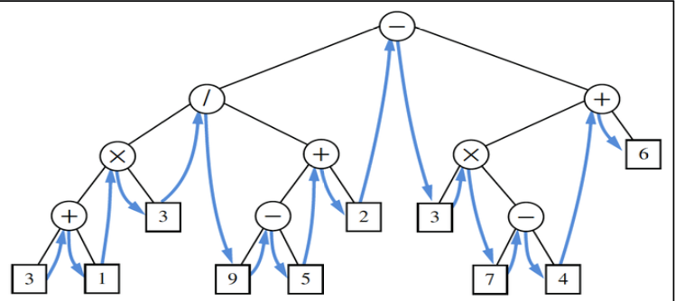

4 Trees and Binary Search Trees
Tree Terminology
Root: The top node in a tree.
Internal node: node with at least one child.
External node (a.k.a. leaf): node with no children.
Ancestor of a node: parent, grandparent, great-grandparent, etc.
Descendant of a node: child, grandchild, great-grandchild, etc.
Depth of a node: number of ancestors.
Height of a node: maximum depth of any node.
Subtree: tree consisting of a node and ALL its descendants.
Siblings: children sharing the same parent.
Edge: parent-child pair
Path: sequence of nodes such that any two consecutive nodes in the sequence form an edge.
The relation between number of nodes \(n\) and number of edges \(e\) is given by \(n=e+1\). This is because every node except the root has exactly one incoming edge.
Binary Trees: Each internal node has at most two children. We call these children the left and right child.
- Proper Tree: Internal nodes must have two children.
- Application 1: a binary tree associated with a decision process.
- Internal nodes: questions with yes/no answer
- External nodes: outcomes/decisions
- Application 2: arithmetic expression tree
- Internal nodes: operators
- External nodes: operands
- Application 1: a binary tree associated with a decision process.
- Perfect Tree: All interior nodes have two children, and all leaves have the same depth.
- Perfect tree is a special case of proper tree.
- Complete Tree: All levels except the last are completed filled, and all nodes in the last level are as far left as possible.
- Proper Tree: Internal nodes must have two children.
Binary Tree Implementation
- Array-based implementation
- It is not efficient when the tree is not complete.
- If we use array-based implementation, there must be some empty slots in the array if the tree is not complete.
- Therefore, we will be using a linked structure based tree. It will attain the following methods:
public void attach(p, t1, t2);
public E remove(p);
public int depth(p);
public int height(p);- The following is a simple implementation of a binary tree.
public class LinkedBinaryTree<E> {
// Static nested class of Node
protected static class Node<E> {
public E element;
public Node<E> parent;
public Node<E> left;
public Node<E> right;
public Node(E e, Node<E> above, Node<E> leftChild, Node<E> rightChild) {
element = e;
parent = above;
left = leftChild;
ight = rightChild;
}
} // End of Node class
// Basic methods
protected Node<E> root = null;
private int size = 0;
public int size() { return size; }
public boolean isEmpty() { return size == 0; }
public Node<E> root() { return root; }
public LinkedBinaryTree() { }
public int numChildren(Node<E> p) {
int count = 0;
if (p.left != null) count++;
if (p.right != null) count++;
return count;
}
public boolean isInternal(Node<E> p) { return numChildren(p) > 0;}
public boolean isExternal(Node<E> p) { return numChildren(p) == 0; }
public Node<E> addLeft(Node<E> p, E e) {
if (p.left != null) throw new IllegalArgumentException("p already has a left child");
Node<E> child = new Node<>(e, p, null, null);
p.left = child;
size++;
return child;
}
public Node<E> addRight(Node<E> p, E e) {
if (p.right != null) throw new IllegalArgumentException("p already has a right child");
Node<E> child = new Node<>(e, p, null, null);
p.right = child;
size++;
return child;
}
// Major methods
public void attach(Node<E> p, LinkedBinaryTree<E> t1, LinkedBinaryTree<E> t2) {
// only hanld nodes with no children
if (numChildren(p) > 0) throw new IllegalArgumentException("p is not a leaf");
addLeft(p, t1.root.element);
addRight(p, t2.root.element);
}
public E remove(Node<E> p) { ... }
public int depth(Node<E> p) { ... }
public int height(Node<E> p) { ... }
}- The following is an implementation of the
removemethod.- The time complexity of the
removemethod is \(\mathcal{O}(1)\).
public E remove(Node<E> p) { // only handle nodes with less than two children // if two children if (numChildren(p) == 2) throw new IllegalArgumentException("p has two children"); // operate on child // define a child, to hold the only one child. If no child, then it is null. Node<E> child; if (p.left != null) child = p.left; else child = p.right; if (child != null) child.parent = p.parent; if (p == root) root = child; else { Node<E> parent = p.parent; if (p == parent.left) parent.left = child; else parent.right = child; E temp = p.element; p.parent = null; p.left = null; p.element = null; size--; return temp; } } - The time complexity of the
depth()implementation- We will know the depth of Node
p, if we know the depth of its parent. - When
pis the root, we knot its depth is0. - The time complexity of the
depthmethod is \(\mathcal{O}(d)\), where \(d\) is the actual depth of the node.
public int depth(Node<E> p) { if (p == root) return 0; else return 1 + depth(p.parent); }- We will know the depth of Node
height()implementation- The method returns the height of the subtree rooted at
p. - The height of a node is the maximum of the heights of its children plus 1.
- The time complexity of the
heightmethod is \(\mathcal{O}(n)\).
public int height(Node<E> p) { int h = 0; if (p.left != null) h = Math.max(h, 1 + height(p.left)); if (p.rght != null) h = Math.max(h, 1 + height(p.right)); return h; }- The method returns the height of the subtree rooted at
- Analysis of Time Complexity
| Method | Time Complexity |
|---|---|
size(), isEmpty() |
\(\mathcal{O}(1)\) |
root(), parent(), left(), right(), isInternal(), isExternal(), numChildren() |
\(\mathcal{O}(1)\) |
addLeft(), addRight(), attach() |
\(\mathcal{O}(1)\) |
remove(p) |
\(\mathcal{O}(1)\) |
depth(p) |
\(\mathcal{O}(d)\) |
height(p) |
\(\mathcal{O}(n)\) |
- If we use an array-based implementation, the space complexity is \(\mathcal{O}(2^n)\), where \(n\) is the number of nodes in the tree.
- On the other hand, using a linked structure based implementation, the space complexity is \(\mathcal{O}(n)\).
- Data structure of General Trees
- The following is a simple implementation of a general tree.
Tree Traversal Algorithms
Depth first: visit the current subtree before the siblings
- Preorder: visit the subtree’s root, then the other part of the subtree.
protected void preorderSubtree(Node<E> p, List<Node<E>> record) { record.add(p); if (p.left != null) preorderSubtree(p.left, record); if (p.right != null) preorderSubtree(p.right, record); }- Postorder: visit the other part of the subtree, then subtree’s root.
protected void postorderSubtree(Node<E> p, List<Node<E>> record) { if (p.left != null) postorderSubtree(p.left, record); if (p.right != null) postorderSubtree(p.right, record); record.add(p); }- Inorder (only for binary trees): visit left branch of the subtree, then subtree’s root, then the right branch of the subtree. 
protected void inorderSubtree(Node<E> p, List<Node<E>> record) { if (p.left != null) inorderSubtree(p.left, record); record.add(p); if (p.right != null) inorderSubtree(p.right, record); }Breath first: visit the nodes level by level (visit siblings before the current subtree)
- In order to achieve breath first traversal, we will use a LinkedListQueue data structure.
- The usage of queue structure is because the key idea of our traversal is first in, first out
protected void breathFirst(List<Node<E>> record) { if (!isEmpty()) { LinkedListQueue<Node<E>> queue = new LinkedListQueue<>(); queue.enqueue(root); while (!queue.isEmpty()) { Node<E> current = queue.dequeue(); record.add(current); if (current.left != null) queue.enqueue(current.left); if (current.right != null) queue.enqueue(current.right); } } }
Binary Search Trees
- Motivation: Search an item from an item collection where items are constantly added or removed. The following functionality will be implemented:
get(k): Returns the valuevassociated with keyk, if such an entry exists; otherwise returnnull.insert(k,v): associates valuevwith keyk, replacing and returning any existing value if the map already contains an entry with key equal tok.delete(k): removes the entry with key equal tok, if one exists, and returns its value; otherwise returnnull.
Why don’t we use heap or priority queue? - Using a heap, the function get(k) will be slow. - Using a priority queue, the function insert(k,v) and delete(k) will be slow.
- Binary Search Tree (BST)
- A binary search tree is a proper binary tree, where each internal position
pstores a key-value pair(k,v)such that- Keys stored in the left subtree of
pare less thank. - Keys stored in the right subtree of
pare greater thank.
- Keys stored in the left subtree of
- To ensure the tree is a proper binary tree, the external nodes are “dummy” (sentinel) nodes. They are fake notes (place-holder) that do not store any key-value pair.
- A binary search tree is a proper binary tree, where each internal position
Generally speaking, the time complexity to search for a key in a binary search tree is \(\mathcal{O}(h)\), where \(h\) is the height of the tree.
Implementing
treeSearch(p, k)- The method will return the node containing key
k. - The idea is to start from the given node
p, and then compare the keykwith the key of the current node. - If the key
kis less than that of the current node, we will continue to search in the left subtree. (based on the property of BST) - Otherwise, we will search the right subtree.
public Node<Entry<K,V>> treeSearch(Node<Entry<K,V>> p, K key) { // Base Cases: if (isExternal(p)) return p; // no such key since we are starting at a dummy node if (p.element.k == key) return p; // found! // Resursive Cases else if (comp.compare(p.element.k, key) > 0) return treeSearch(p.left, key); else return treeSearch(p.right, key); }- The method will return the node containing key
Implementing
insert(k, v)- The method will insert the key-value pair
(k,v)into the tree. If the key already exists, the value will be replaced. - The idea is to first determine the position to insert the key-value pair. So, we will use the
treeSearchmethod to find the position.
public void insert(K key, V value) { // Step 1: find the node Node<Entry<K,V>> p = treeSearch(root, key);; // Step 2: operate on the node depending on the result if (!isExternal(p)) { // Situation 1: the key is found p.element.v = value; // replace the value } else { // Situation 2: the key is not found, and we are at a dummy node p.element = new Entry<>(key, value); // insert the key-value pair // udpate the left child addLeft(p, null); // update the right child addRight(p, null); } }- The method will insert the key-value pair
Implementing
delete(k)- The method will remove the key-value pair
(k,v)from the tree and return the value corresponding to the keyk. - If the key is not found, the method will return
null. - There are three possible conditions of the node
p:pis a leaf node: we can simply remove the node.phas only one child: we can remove the node and replace it with its child.phas two children:- Step 1: Find the node with key being closest to the target node: rightmost node of left-subtree (or leftmost node of right-subtree).
- Step 2: Replace the target node with the node with the closest key.
- Step 3: Delete the original place of the node with the closest key via the remove operation. ```java public void deleteHelper(Node<Entry<K,V>> p) { Node<Entry<K,V>> leaf = (isExternal(p.left) ? p.left : p.right); remove(leaf); remove(p); }
- The method will remove the key-value pair
public Node<Entry<K,V>> treeMax(Node<Entry<K,V>> p) { if (isExternal(p.right)) return p; else treeMax(p.right); }
public void delete(K key) { Node<Entry<K,V>> p = treeSearch(root, key); if (isInternal(p)) { if (isExternal(p.left) || isExternal(p.right)) { // Situation 1: p is a leaf node // Situation 2: p has only one child deleteHelper(p); } else { // Situation 3: p has two children // find the rightmost node in the left subtree Node<Entry<K,V>> replacement = treeMax(p.left); // replace p.element = replacement.element; // remove deleteHelper(replacement); } } }
- Time complexity in terms of $h$, the height of the tree
| Method | Time Complexity |
|:---:|:---:|
|`treeSearch(p, k)`| $\mathcal{O}(h)$ |
|`insert(k, v)`| $\mathcal{O}(h)$ |
|`delete(k)`| $\mathcal{O}(h)$ |
- However, when the tree structure is different, the relationship between $h$ and $n$ (the number of nodes) is different.
- The worst case time complexity of the `delete` method is $\mathcal{O}(n)$, where $n$ is the number of nodes in the tree.
- The best case time complexity of the `delete` method is $\mathcal{O}(h)=\mathcal{O}(\log n)$, where $h$ is the height of the tree.
- Rebalance Trees:
{#fig-rebalance-trees width=75%}
- The basic operation for rebalancing is `rotate()`.
- Step 1: Link `b`'s parent as `a`'s parent.
- Step 2:
- Relink `a` as `b`'s parent
- Relink `a`'s child as `b`'s child.
{#fig-rotate width=75%}
```java
protected void relink(Node<Entry<K,V>> parent, Node<Entry<K,V>> child, boolean makeLeftChild) {
child.parent = parent;
if (makeLeftChild) parent.left = child;
else parent.right = child;
}
public void rotate(Node<Entry<K,V>> p) {
// We assue node a has parent as otherwise it is trivial to handle by wrapper.
Node<Entry<K,V>> q = p.parent;
Node<Entry<K,V>> grandparent = q.parent;
if (grandparent == null) {
// Corner case: parent is root
root = p;
p.parent = null;
} else {
// Step 1
relink(grandparent, p, q == grandparent.left);
}
// Step 2
if (p == q.left) {
relink(q, p.right, true);
relink(p, q, false);
} else {
relink(q, p.left, false);
relink(p, q, true);
}
}- When we are handling trinode resturction, there are two possible cases:
- Single rotation
- Double rotation

public Node<Entry<K,V>> restructure(Node<Entry<K,V>> p) { // We assume node x has parent adn grandparent as otherwise it is trivial to handle by wrapper. // x will be the lowest node in trinodes. Node<Entry<K,V>> parent = p.parent; Node<Entry<K,V>> grandparent = parent.parent; if ((grandparent.left == parent) && (parent.left == p) || (grandparent.right == parent) && (parent.right == p)) { rotate(parent); return parent; } else { rotate(p); rotate(p); return p; } }